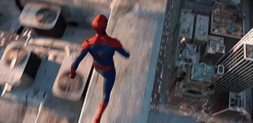

Spider Man
Spider-Man is a superhero in American comic books published by Marvel Comics.
Created by writer-editor
Stan Lee and artist Steve Ditko,
he first appeared in the anthology comic book Amazing Fantasy #15 in
the Silver Age of Comic Books.
Comics of spider man
The number of Spider-Man comics varies depending on which list you consult,
but it is estimated that
there are around 613 Spider-Man comics published between 1963 and 2018.
games of spider man
Spider-Man is an action adventure video game saga whose current owner is Sony and which currently has a total
of 25 games for PS5, Android, Xbox One, PS4, PSVITA, Wii U, Nintendo 3DS,
iPhone, Xbox 360, PS3, Wii,
PSP, NDS, Game Boy Advance, N-Gage, Xbox, GameCube, PS2, PC, Dreamcast, Nintendo 64 and
actors of spider man
some actors who played spider was man Tobey Maguire, Andrew Garfield, and Tom Holland
villains of Spider-Man
some villains are
- kingpin
- electro
- rhino
- scorpion
- vulture
- inner demons
What make spide be spide ???
In The Amazing Spider-Man 2, the spider that bit Peter Parker is an Araneus Oscorpeus.b
In the Marvel
Cinematic Universe (MCU), the spider that bit Spider-Man
may have come from somewhere else, such as a
tunnel or a Stark exhibition.
the chronology
About the chronology we don't have many resources but here is a video with a chronology of the first films

The merch
spider man have more merch for kids than mos for adults but clik here to go to the web site of the merch
the animations
spider man have so much years in active in all that years the heroe have animations an serios of him in animation and some animations are
- Spider-Man: The Animated Series
- Spider-Man Unlimited
- Spider-Man (1981)
- and Spider-Man: The New Animated Series
that all of the animated series an movis os spider man
miles morales
spiderman have a lot of charactes an multiverse and in one of the multivers exist miles morales
Miles Morales, also known by his superhero alias Spider-Man, is the main character,
alongside Peter
Parker, of the Marvel's Spider-Man series.
He is a playable supporting character in Marvel's
Spider-Man,
the playable protagonist of Marvel's Spider-Man: Miles Morales, and the playable dual
protagonist of Marvel's Spider-Man 2.